🌐 Forms in HTML
A form in HTML is used to collect input from users. It allows users to enter data (like text, password, email, options, etc.) and send it to a server for processing.
The <form> tag is used, and inside it, input fields, buttons, checkboxes, radio buttons, etc., are placed.
🔶The <form> Element:-
♣ The HTML <form> element is used to create an HTML form for user input:
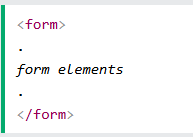The <form> element is a container for different types of input elements, such as: text fields, checkboxes, radio buttons, submit buttons, etc.
🔶The <input> Element:-
♣ The <input> element in HTML is used inside a form to take user input. It is a self-closing tag (doesn't need a closing tag).
♣ Here are some examples:
| Type | Description |
|---|---|
| <input type="text"> | Displays a single-line text input field |
| <input type="radio"> | Displays a radio button (for selecting one of many choices) |
| <input type="checkbox"> | Displays a checkbox (for selecting zero or more of many choices) |
| <input type="submit"> | Displays a submit button (for submitting the form) |
| <input type="button"> | Displays a clickable button |
| <input type="password"> | Displays a text box where typed characters are hidden with dots or asterisks (●●●). |
| <input type="number"> | Displays a numeric input box. |
| <input type="date"> | Displays a date picker. |
🔶The <label> Element:-
♣ The <label> element in HTML is used to give a name or caption to an input field in a form.
♣ Example:
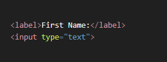🔶id and for attributes:-
♣ Why we use id and for?
- The for attribute in <label> must match the id of an <input>.
- This creates a connection between label and input.
- When you click the label text, the related input field automatically gets focus (or is selected in case of checkboxes/radio buttons).
- It improves usability and accessibility (important for screen readers).
- Example:

🔶Radio Buttons:-
♣ The <input type="radio"> defines a radio button.
♣ A radio button in HTML is a type of input that allows the user to select only one option from a group.
♣ Examle:
- Code:
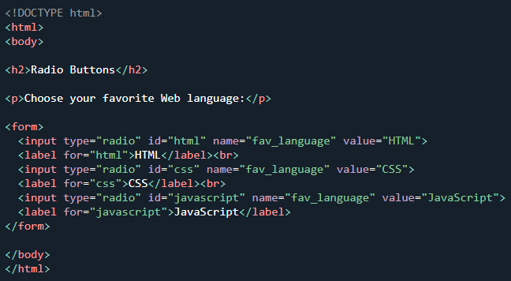 - Output:
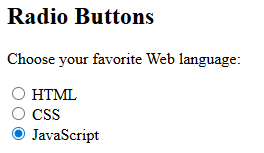
🔶Checkboxes:-
♣ The <input type="checkbox"> defines a checkbox.
♣ Checkboxes let a user select ZERO or MORE options of a limited number of choices.
♣ Example:
- Code:

- Output:
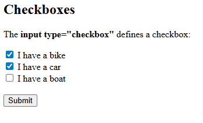
🔶The Submit Button:-
♣ Created using <input type="submit"> or <button type="submit">.
♣ A submit button in HTML is used to send form data to the server (or the page mentioned in the form's action attribute).
♣ Examle:
- Code:
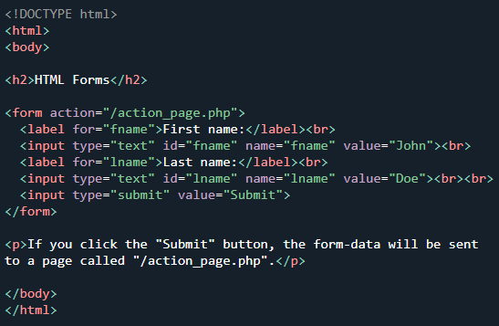 - Output:
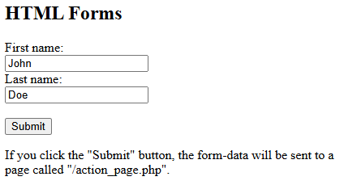
🔶The Name Attribute for <input>:-
♣ The Problem: When the form is submitted, the browser needs to package the data to send to a server. How does it label the data? If a user types "Arjun" in the first box, how does the server know that "Arjun" is the firstName? The id attribute is only for use within the page; it is not sent to the server.
♣ The Solution: We need another attribute whose sole purpose is to be the "data label" or the "key" for the submitted value. This is the name attribute.
♣ Example:
- Code:
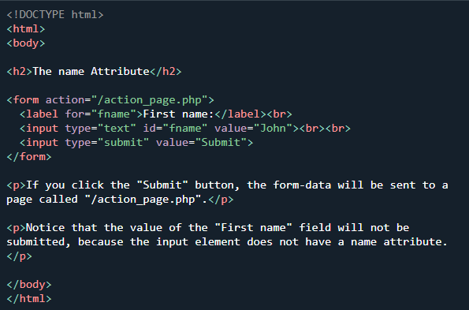 - Output:
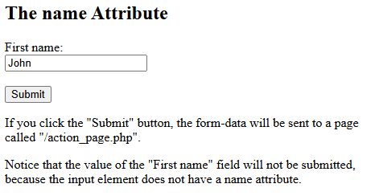
🔶HTML <textarea> Tag:-
♣ The <textarea> element in HTML is used to create a multi-line text input field in a form.
♣ Examle:
- Code:
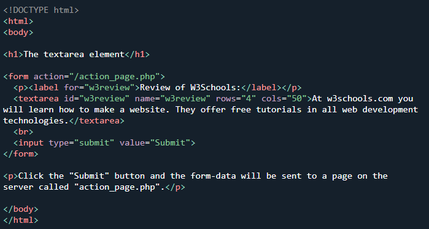 - Output:
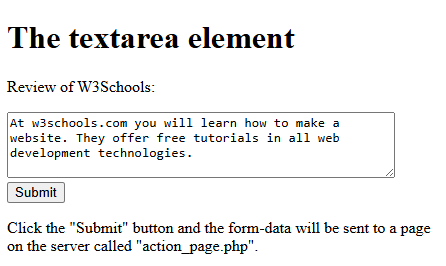
🔶HTML <select> Tag:-
♣ The <select> tag in HTML is used to create a drop-down list in a form.
♣ Examle:
- Code:
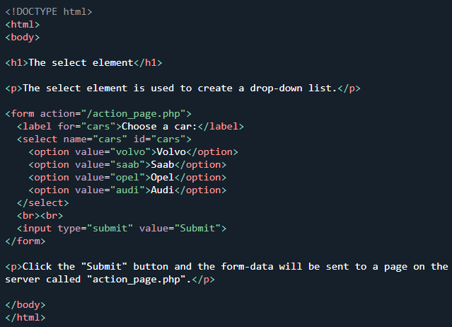 - Output:
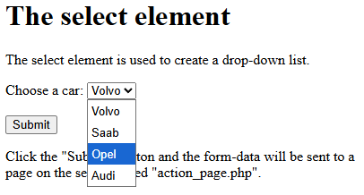